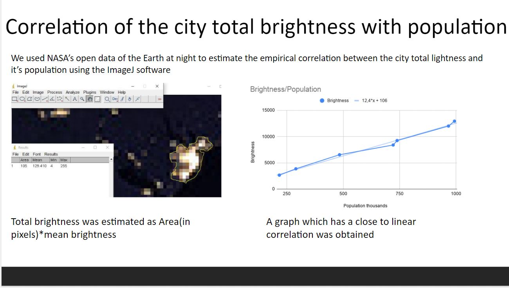

Olha, Ivan, and I delved into the world of data analysis. We worked one week on the project about the impacts of COVID-19 on the Earth system response.
Our project aims to improve the SIR model in predicting the COVID-19 based on cities' brightness and find the correlation between the quarantine abidance and atmospheric composition changes. We discovered the dependence between regions' intelligence, their populations, and hence the number of social interactions. Thus, basing on our models, we got the result that showed proportional dependence of change in CO composition in the atmosphere and the number of social contact between people.
Ironically, the reason we worked at home and the project’s topic is the same, so it was challenging to communicate with each other during the hackathon. ] However, with our persistence and active chatting, we managed to deal with that obstacle.
In the first two days, the most challenging part was to develop the specific java software that would analyze CSV databases of pollution levels of different atmospheric gases.
Our project